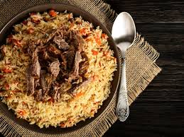

Pilaw/Plov

Pilaw, auch bekannt als Plov, ist weit mehr als nur ein Gericht – es ist ein Symbol der usbekischen Kultur und Gastfreundschaft. Dieses traditionelle Reisgericht hat eine lange Geschichte und wird in Usbekistan und ganz Zentralasien als wahres Nationalgericht geschätzt. Pilaw vereint einfache Zutaten wie Reis, Fleisch, Zwiebeln und Karotten zu einem harmonischen und schmackhaften Erlebnis, das bei großen Feierlichkeiten und Familienzusammenkünften nicht fehlen darf. Die Kunst der Zubereitung von Pilaw wird von Generation zu Generation weitergegeben, und jede Familie hat ihre eigene Variante, die das Gericht einzigartig macht. Lassen Sie uns gemeinsam in die Welt dieses köstlichen Gerichts eintauchen und mehr über seine Bedeutung und Zubereitung erfahren.
Huaptzutaten von Plow:
- Reis: Der Reis ist die Basis des Gerichts und wird oft mit einer speziellen Sorte zubereitet.
- Fleisch: In der Regel wird Lammfleisch verwendet, aber es gibt auch Varianten mit Rind, Huhn oder sogar Fisch.
- Zwiebeln und Karotten: Diese werden oft in Streifen geschnitten und im Gericht mitgekocht.
- Gewürze: Koriander, Kreuzkümmel, und manchmal Berberitzen oder getrocknete Früchte wie Rosinen. Safran oder Kurkuma können verwendet werden, um dem Reis eine goldene Farbe zu geben.
- Öl oder Fett: Oft wird Schafsfett oder Pflanzenöl verwendet, um dem Gericht einen reichen Geschmack zu verleihen.
Zubereitung:
- Fleisch anbraten: Das Fleisch wird zuerst in Öl oder Fett angebraten, bis es eine schöne Bräunung hat.
- Zwiebeln und Karotten hinzufügen: Die Zwiebeln werden glasig gebraten, und die Karotten werden hinzugefügt, um ihre Süße freizusetzen.
- Gewürze hinzufügen: Die Gewürze werden hinzugefügt, um das Gericht zu aromatisieren.
- Reis kochen: Der Reis wird über das Fleisch und das Gemüse gegeben, und Wasser wird hinzugefügt. Der Reis wird auf niedriger Hitze gegart, bis er das Wasser aufgesogen hat und durchgegart ist.
- Dämpfen: Oft wird das Gericht am Ende zugedeckt und bei sehr niedriger Hitze gedämpft, um die Aromen vollständig zu entfalten.
Plow ist ein sehr schmackhaftes und sättigendes Gericht, das die Gastfreundschaft und die kulinarische Tradition Usbekistans widerspiegelt. Es gibt viele regionale Varianten von Plow, die je nach Region und Tradition leicht unterschiedliche Zutaten und Zubereitungsmethoden verwenden.